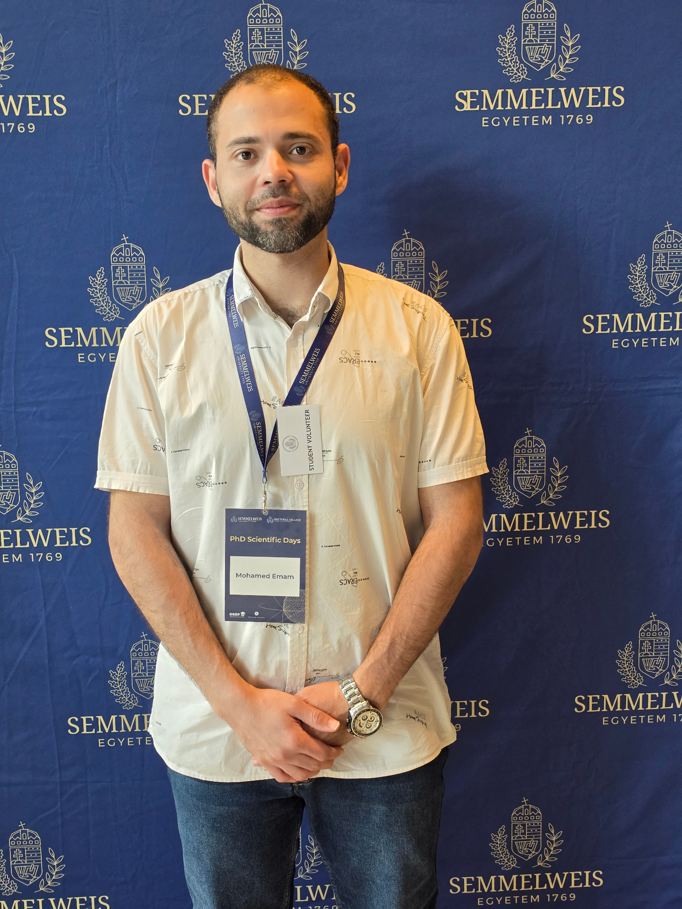
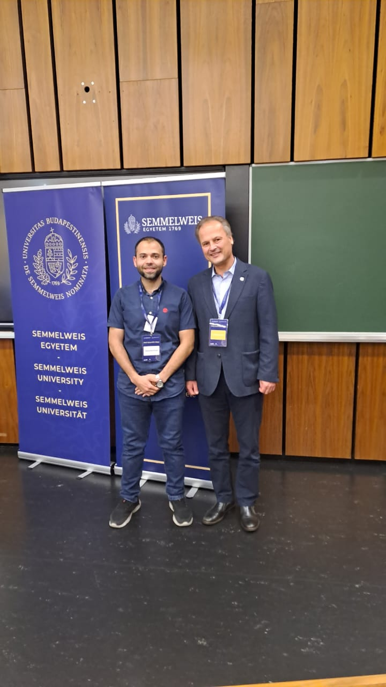
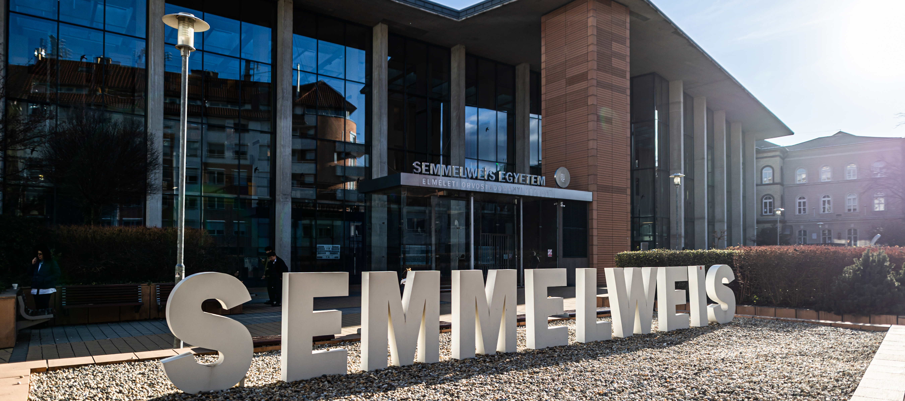

🚶
Gait Analysis & Biomechanics
Kinematic patterns in aging, eccentric vs. concentric exercise effects, gait adaptations in stroke, and muscle activation during gait.

Biomechanics Researcher · AHPRA-Registered Physiotherapist
I bridge clinical rehabilitation with cutting-edge biomechanics — using markerless motion capture (OpenCap) and statistical parametric mapping to answer questions that matter in real clinical settings.
I am a biomechanics researcher and AHPRA-registered physiotherapist completing a joint PhD at Semmelweis University (Budapest) and Cairo University (2022–2026). My work uses markerless motion capture (OpenCap) and statistical parametric mapping to study how the body moves during rehabilitation, aging, and disease.
With nine years of clinical and academic experience, I hold full general registration with the Australian Health Practitioner Regulation Agency (AHPRA) — meaning I can participate in clinical research in Australia from day one. I also teach physiotherapy at university level, create clinical education content, and mentor students in research design and methodology.
Postdoctoral fellowship opportunities focused on gait analysis, rehabilitation biomechanics, and neurorehabilitation.
Core question: how can we use objective, accessible motion analysis to improve rehabilitation outcomes?
Kinematic patterns in aging, eccentric vs. concentric exercise effects, gait adaptations in stroke, and muscle activation during gait.
OpenCap brings lab-grade motion analysis to the clinic with a smartphone camera — accessible, scalable, and instantly meaningful to patients.
SPM1D analyses entire kinematic curves — identifying when and where movement patterns differ between groups, not just peak values.
Electrical stimulation, proprioceptive training, gait retraining, and fall-risk reduction for stroke survivors and elderly populations.
Resistance training (eccentric vs. concentric), blood-flow-restriction protocols, and functional-mobility interventions for older adults.
Cervicogenic headache, chronic neck pain, and spinal mobilisation — understanding the biomechanics that inform clinical management.
Proprioceptive training in cervicogenic headache, studied with surface EMG, posturography (centre-of-pressure) and machine-learning analysis of biomechanical data — a research line running from my MSc through four clinical trials.
Examining the impact on walking economy, muscle architecture, tendon stiffness and myoelectrical activity.
Combining explainable AI (SVM, SHAP) and SPM1D to characterize stroke-related gait impairments.
Surface EMG, posturography and machine-learning classification of centre-of-pressure data to identify who responds to proprioceptive training, and why.
Using PCA to identify disease-specific and shared movement compensations in FSHD and myotonic muscular dystrophy.
13 peer-reviewed publications across Q1/Q2 journals (2019–2026), including 7 in Q1 journals. Use the filters to explore by year.
Social Sciences & Humanities Open · Cross-sectional study · Accepted
BMC Pediatrics · Cross-sectional study · Q2
Life · Machine Learning Study · Q1
Healthcare · Systematic Review & Meta-Analysis · Q1
Developments in Health Sciences · Systematic Review · Accepted
Neurological Sciences · Randomised Controlled Trial · Q1
BMC Musculoskeletal Disorders · Cross-sectional study · Q2
BMC Neurology · Randomised Clinical Trial · Q2
Physiology International · Randomised Controlled Trial · Q1
Physiology International, 112(4) · Systematic Review & Meta-Analysis · Q1
Journal of Clinical Medicine, 14(12):4185 · Scoping Review · Q1
Journal of Clinical Medicine, 13(22):6777 · Randomised Clinical Trial · Q1
Medical Journal of Cairo University · Cross-sectional (sEMG)
Semmelweis University, Budapest & Cairo University — postural control and proprioceptive rehabilitation in cervicogenic headache (surface EMG, posturography & machine-learning analysis of biomechanical data); and resistance training on the cost of walking and muscle architecture in healthy older adults. Supervisors: Prof. Tibor Hortobágyi & Assoc. Prof. Magda Ramadan.
Kafr El-Sheikh University — teaching musculoskeletal physiotherapy, lab demonstrations, curriculum development & student research mentorship.
Start-Rehabilitation Centre, Kafr El-Sheikh — clinical management of musculoskeletal & orthopaedic conditions, manual therapy and exercise rehabilitation.
Cairo University, Egypt.
Cairo University, Egypt.
Glimpses of life and study in Budapest.


Open to research collaboration, clinical translation, teaching partnerships, and postdoctoral fellowships worldwide.
Opens a contact card — tap Save contact to add me to your address book (vCard).